TUTORIAL
El Quidditch es mucho más que un juego: es la pasión que une a magos y brujas en los estadios de todo el mundo. En esta sección encontrarás un tutorial paso a paso para conocer las reglas básicas y las posiciones de los jugadores.
LIGA BRITÁNICA
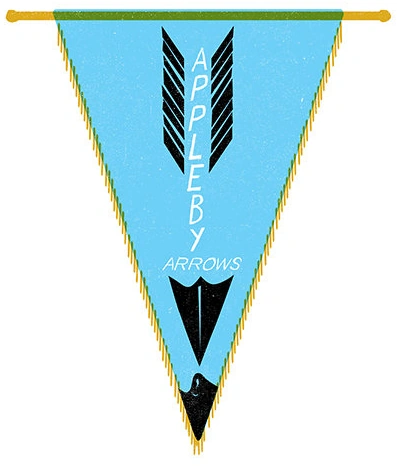
Appleby Arrows
Fundado en el siglo XVII, famoso por sus uniformes azul cielo con una flecha plateada. Sus seguidores lanzan flechas al aire (ahora prohibido por seguridad).
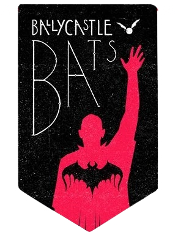
Ballycastle Bats
El equipo más exitoso de Irlanda del Norte, de colores rojo y negro. Patrocinan la famosa bebida mágica Barny’s Beans.
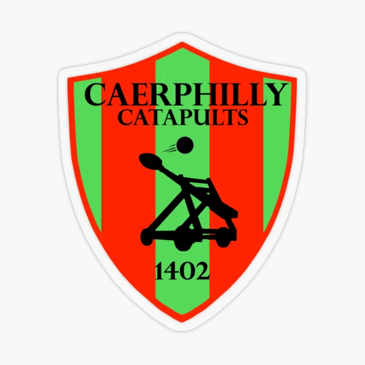
Caerphilly Catapults
De Gales, célebres por su estilo ofensivo y atrevido. Sus uniformes son verdes y plateados. Ganadores históricos de varias copas internacionales.
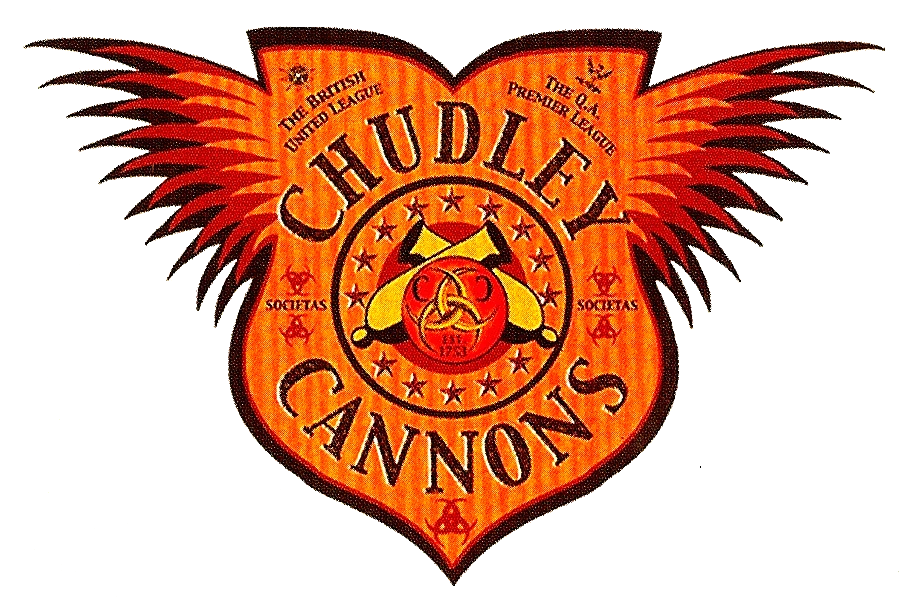
Chudley Cannons
Muy queridos, pero tristemente famosos por su larga mala racha de derrotas. Uniforme naranja brillante con dos cañones negros.
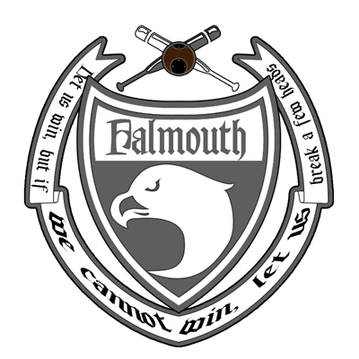
Falmouth Falcons
De Cornualles, conocidos por su juego brutal y físico. Su lema es “¡Ganemos, pero si no, rompamos algunos huesos!”. Sus uniformes son grises y negros.
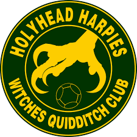
Holyhead Harpies
Un equipo exclusivamente femenino de Gales. Sus jugadoras son reconocidas por su velocidad y agresividad. Colores verde esmeralda con una arpía dorada.
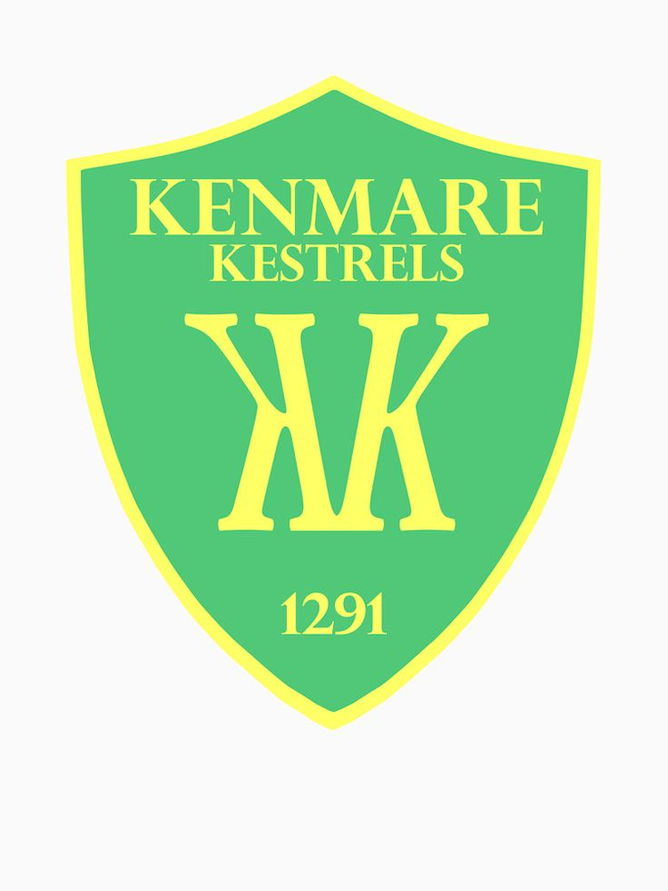
Kenmare Kestrels
Equipo irlandés famoso por sus seguidores que usan panderetas encantadas durante los partidos. Uniformes verdes con un cernícalo dorado.
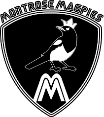
Montrose Magpies
Escoceses y los más exitosos de toda la liga, con más de 30 títulos. Visten de blanco y negro. Muy respetados y temidos por su disciplina táctica.
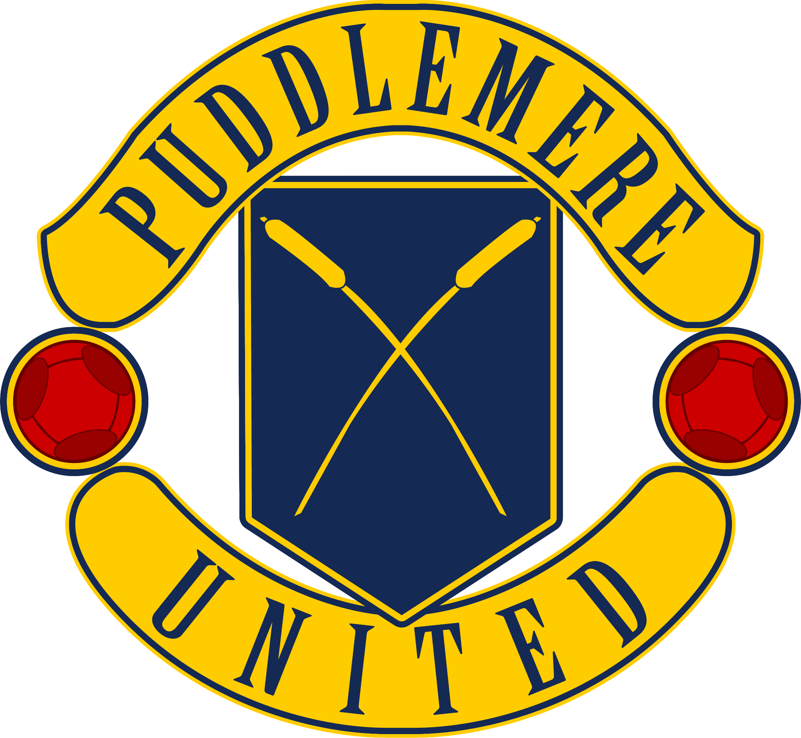
Puddlemere United
El equipo más antiguo, fundado en 1163. Sus uniformes son azul marino con dos barriles cruzados. Famosos por su himno tocado con gaitas mágicas.
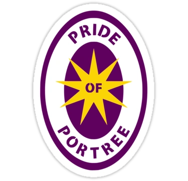
Pride of Portree
De la isla de Skye, Escocia. Sus colores son morado y dorado. Muy seguidos por las comunidades isleñas.
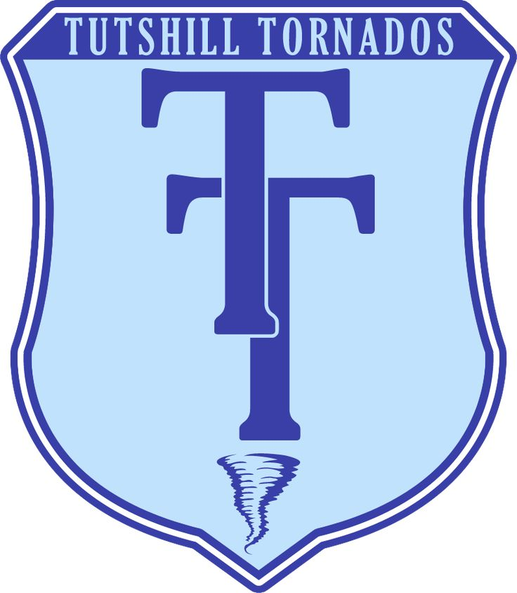
Tutshill Tornados
De Gloucestershire, lograron un récord de 5 títulos seguidos en la década de 1920. Visten azul claro con una “T” doble en el pecho.
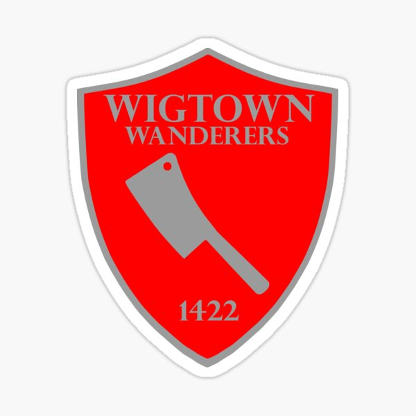
Wigtown Wanderers
Fundados por siete hermanos carniceros escoceses; su símbolo es un cuchillo de carnicero plateado sobre fondo rojo. Juegan con dureza y tradición familiar.
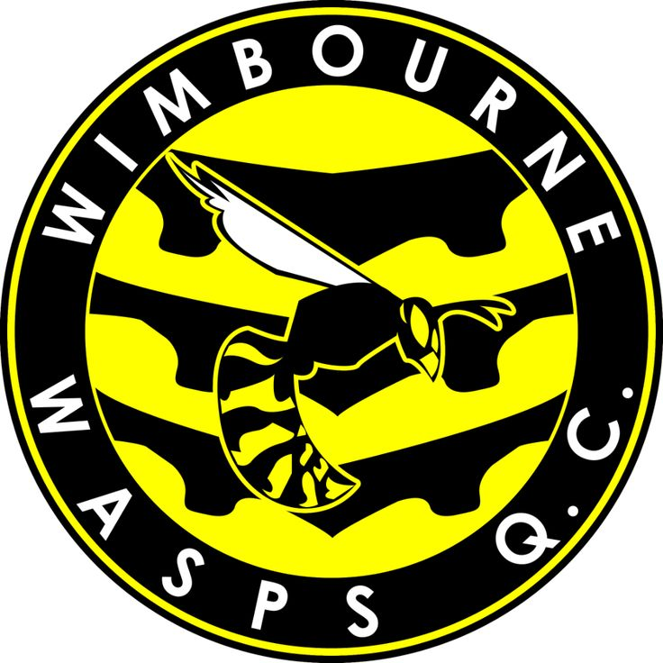
Wimbourne Wasps
Reconocidos por sus seguidores que zumban como avispas en los estadios. Colores negro y amarillo. Rivalidad histórica con los Appleby Arrows.
CONTACTO
Para más información acerca de las reglas o de los equipos, puedes rellenar el siguiente formulario: